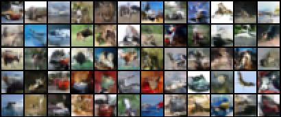

Small-scale academic project, only for proof of concept
World Snapshot Model and Wave Generative Method:
Unifying Digital Reality at the Pixel Level
1Rutgers, The State University of New Jersey
TLDR (1/15): Requirements for implementing an ideal world model: 1. Encode all information to the boundary. 2. Conform to conformal symmetry. Follow this rule, flattens the world into a two-dimensional space, and visual generation is almost lossless world generation.
All TLDRs

This picture is a visualization of the training data for the part of information that our model can generate, estimate, control, and Reconstruct:
Our model can control hundreds of information conditions at the pixel level and utilize them for more tasks (Note that a modal can have multiple information conditions).
Due to space limitations, we only present demonstrations for 60 information conditions.
We also provide more demonstrations and the corresponding task lists supported by these information conditions.